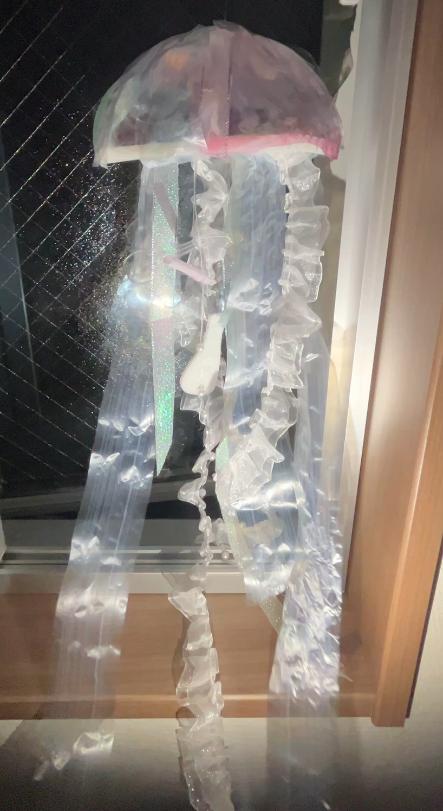
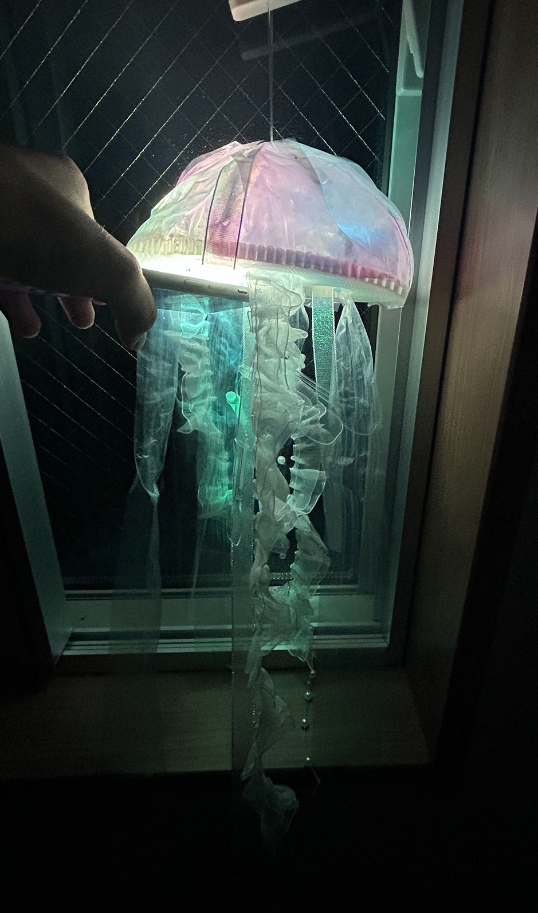

動機：癒されるものを作りたいと思い、窓に吊るして光や音を楽しめるものにしようと考えた結果クラゲがいいのではないかと思った。
制作過程
デッサン：

使用アプリ：fusion360,UltiMaker Cura
fusion設計図：


サイズを大きめに設定したせいで出力に問題が生じ、fusionの設計図通りにはならなかった。そのため今回は失敗した3Dプリントと市販のものと組み合わせて作成した。 土台は3Dプリント（失敗：3つの穴が空いた円状の板に）、そのためクラゲの頭となる部分は針金とセロハンで作成した。また足の部分も予想通りの形にはならず失敗したものと市販のものを組み合わせて作成した。
完成品：

土台の穴に色つきセロハンを貼り下からの光で暗い海のような雰囲気が出るようにした。 
反省点：fusionでの設計に時間をかけてしまい、3Dプリンターを実際に使用する時間を多く取ることができず作りきれなかった。3Dプリントの素材を活かしたクラゲを作成したかったが、土台にしてしまい全面に出すことができなかったことが悔しかった。
完成品動画